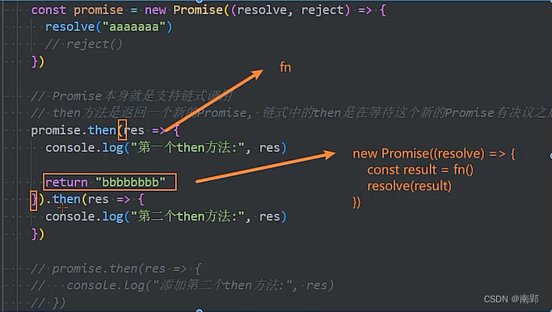
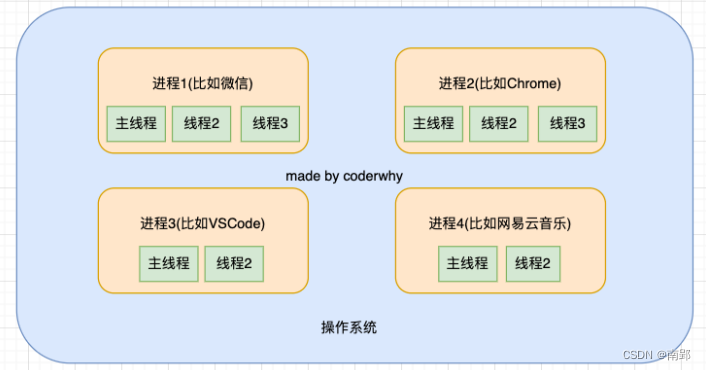
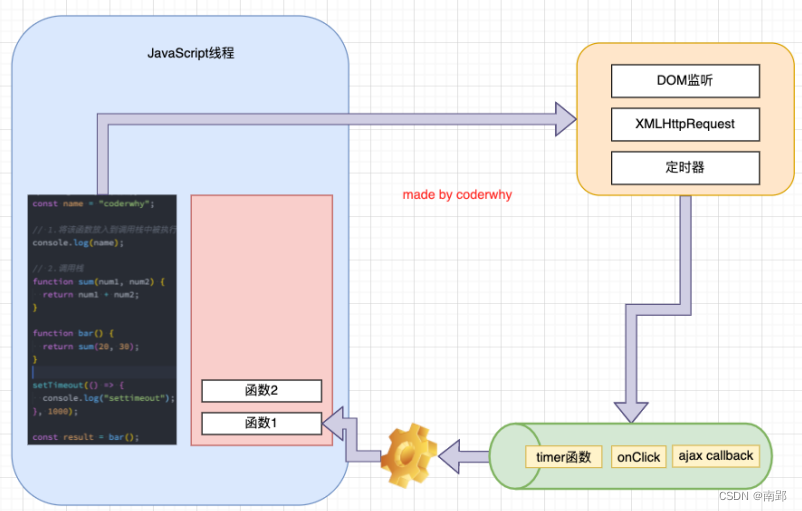
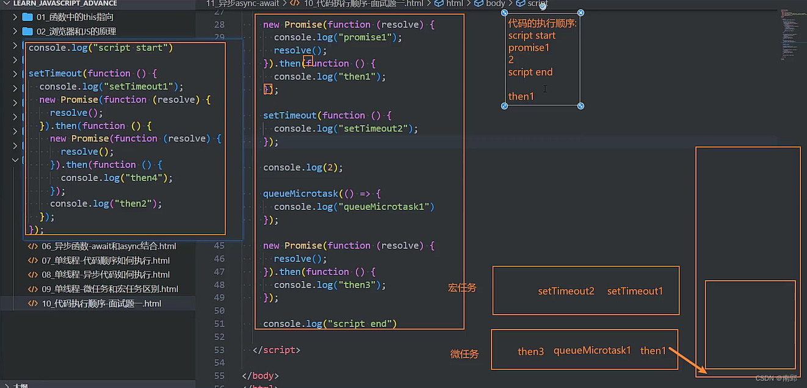
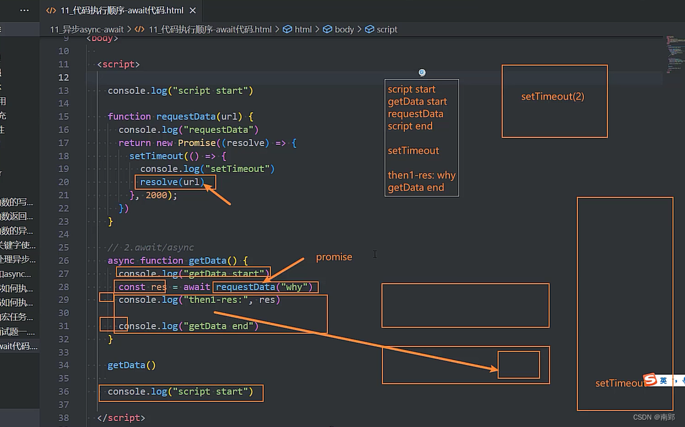
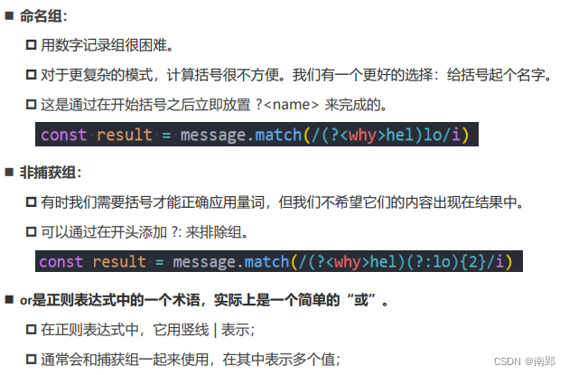
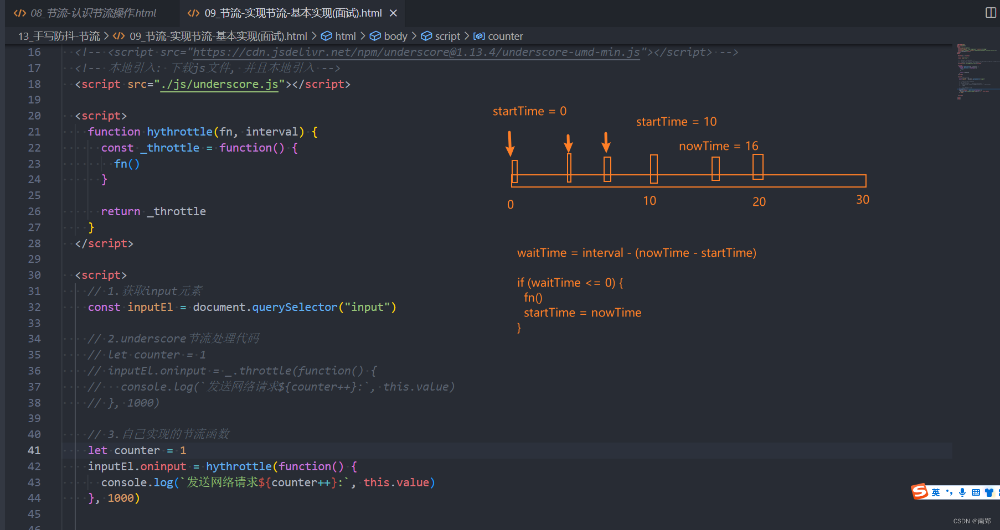
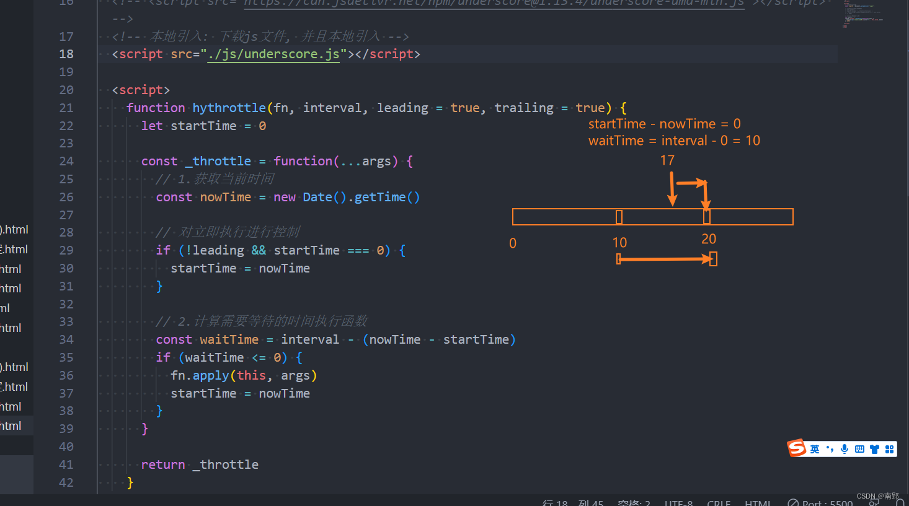

一、Promise 使用
1. 异步代码存在困境
调用一个函数，这个函数中发送网络请求（我们可以用定时器来模拟）
- 如果发送网络请求成功了，那么告知调用者发送成功，并且将相关数据返回过去
- 如果发送网络请求失败了，那么告知调用者发送失败，并且告知错误信息；
// 1.设计这样的一个函数 function execCode(counter, successCallback, failureCallback) { // 异步任务 setTimeout(() => { if (counter > 0) { // counter可以计算的情况 let total = 0 for (let i = 0; i < counter; i++) { total += i } // 成功情况，在某一个时刻只需要回调传入的函数 successCallback(total) } else { // 失败情况, counter有问题 failureCallback(`${counter}值有问题`) } }, 3000) } // 2.ES5之前,处理异步的代码都是这样封装 execCode(100, (value) => { console.log("本次执行成功了:", value) }, (err) => { console.log("本次执行失败了:", err) })
缺点：
- 需要自己来设计回调函数、回调函数的名称、回调函数的使用等
- 对于不同的人、不同的框架设计出来的方案是不同的，那么我们必须耐心去看别人的源码或者文档，以便可以理解这个函数到底怎么用
2. Promise 的代码结构
- Promise是一个类
- 当我们需要的时候，给予调用者一个承诺：待会儿我会给你回调数据时，就可以创建一个Promise的对象
- 在通过new创建Promise对象时，我们需要==传入一个回调函数==，我们称之为executor
- 这个回调函数会被立即执行，并且给传入另外两个回调函数
resolve、reject- 当我们调用resolve回调函数时，会执行Promise对象的
then方法传入的回调函数 - 当我们调用reject回调函数时，会执行Promise对象的
catch方法传入的回调函数
- 当我们调用resolve回调函数时，会执行Promise对象的
- 这个回调函数会被立即执行，并且给传入另外两个回调函数
```
```js
function execode(count) {
const promise = new Promise((resolve, reject) => { // 此处函数为立即执行函数
setTimeout(() => {
if (count > 0) {
let total = 0
for (let i = 0; i <= count; i++) {
total += i
}
// 成功的回调
resolve(total)
} else {
// 失败的回调
reject(`${count}错误`)
}
}, 3000);
})
return promise
}
execode(100).then((value) => {
console.log('成功，有了结果：', value);
}).catch((err) => {
console.log('失败，有了错误：', err);
})3. Promise 状态变化
Promise使用过程，我们可以将它划分成三个状态：
- 待定（pending）: 初始状态，既没有被兑现，也没有被拒绝
- 当执行executor中的代码时，处于该状态
- 已兑现（fulfilled）: 意味着操作成功完成
- 执行了resolve时，处于该状态，Promise已经被兑现
- 已拒绝（rejected）: 意味着操作失败
- 执行了reject时，处于该状态，Promise已经被拒绝
const promise = new Promise((resolve, reject) => {
// 1.待定状态
console.log('111111');
console.log('222222');
// 状态一旦确定，不会更改，不能再执行别的回调函数来改变状态
// 2.兑现状态
resolve()
// 3.拒绝状态
reject()
})
promise.then((value) => {
console.log('成功的回调');
}).catch((err) => {
console.log('失败的回调');
})3.1 resolve不同的值
- 情况一：如果resolve传入一个普通的值或者对象，那么这个值会作为then回调的参数
- 情况二：如果resolve中传入的是另外一个Promise，那么这个新Promise会决定原Promise的状态
- 情况三：如果resolve中传入的是一个对象，并且这个对象有实现then方法，那么会执行该then方法，并且根据then方法的结果来决定Promise的状态
const p = new Promise((resolve) => {
setTimeout(() => {
resolve("p的resolve")
}, 2000)
})
const promise = new Promise((resolve, reject) => {
//1.普通值
resolve({ name: 'why', age: 18 })
//2.promise
resolve(p)
//3.thenable
resolve({
then: function (resolve) {
resolve(1111)
}
})
})
promise.then(res => {
console.log("then中拿到结果:", res)
})4. Promise 实例方法
4.1 then 和 catch 方法
then方法是Promise对象上的一个方法（实例方法）
- 放在Promise的原型上的
Promise.prototype.then
then方法接受两个参数：
- resolve的回调函数：当状态变成resolve时会回调的函数
- reject的回调函数：当状态变成reject时会回调的函数
一个Promise的then方法是可以被多次调用的：
- 每次调用我们都可以传入对应的resolve回调
- 当Promise的状态变成resolve的时候，这些回调函数都会被执行
const promise = new Promise((resolve, reject) => {
resolve('success')
// reject('failure')
})
// promise.then(res => {
// console.log('成功回调', res);
// }, err => {
// console.log('失败回调', err);
// })
promise.then(res => {
console.log('成功回调', res);
})
promise.then(res => {
console.log('成功回调', res);
})
promise.then(res => {
console.log('成功回调', res);
})
promise.then(res => {
console.log('成功回调', res);
})then 的返回值
then方法本身是有返回值的，它的返回值是一个Promise
当then方法中的回调函数返回一个结果时，那么它处于resolve状态，并且会将结果作为resolve的参数
- 返回一个普通的值
- 返回一个Promise
- 返回一个thenable值
当then方法抛出一个异常时，那么它处于reject状态
const promise = new Promise((resolve, reject) => {
resolve('aaaaa')
// reject('failure')
})
promise.then(res => { // 返回新的promise
console.log('第一个then', res); //aaaaa
return 'bbbbb'
}).then(res => {
console.log('第二个then', res);//bbbbb
return 'ccccc'
}).then(res => {
console.log('第三个then', res);//ccccc
})
promise.then(res => {
console.log('添加第二个then', res);//aaaaa
})then返回一个Promise，return中的值传入resolve的result中作为下一次执行的参数

catch方法也是Promise对象上的一个方法（实例方法）
一个Promise的catch方法是可以被多次调用的
catch方法也是会返回一个Promise对象的，所以catch方法后面我们可以继续调用then方法或者catch方法
const promise = new Promise((resolve, reject) => {
// resolve('success')
reject('failure')
})
promise.catch(err => {
console.log('失败回调', err);
}).then(res => {
console.log('成功回调', res);
})
// 输出：失败回调failure 成功回调undefined
// 因为catch传入的回调在执行完后，默认状态依然会是resolve的需要catch() 方法兜底，处理异常情况
中断函数继续执行:
方式一: return
方式二: throw new Error()
方式三: yield 暂停(暂时性的中断)
const promise = new Promise((resolve, reject) => {
resolve("aaaaaa")
})
promise.then(res => {
console.log("then第一次回调:", res)
// throw new Error("第二个Promise的异常error")
return "bbbbbb"
}).then(res => {
console.log("then第二次回调:", res)
throw new Error("第三个Promise的异常error")
}).then(res => {
console.log("then第三次回调:", res)
}).catch(err => {
console.log("catch回调被执行:", err)
})
// then第一次回调: aaaaaa
// then第二次回调: bbbbbb
// catch回调被执行: Error: 第三个Promise的异常error4.2 finally 方法
finally方法不接收参数，无论Promise对象无论变成fulfilled还是rejected状态，最终都会被执行
const promise = new Promise((resolve, reject) => {
resolve('aaaaa')
// reject('bbbbb')
})
promise.then(res => {
console.log('then', res);//执行
}).catch(err => {
console.log('catch', err);
}).finally(() => {
console.log('hhhhhhh');//执行
})5. Promise 类方法
5.1 resolve 和 reject 方法
Promise.resolve() 相当于new Promise，并且执行resolve操作Promise.reject() 相当于new Promise，只是会调用reject
const studentList = ['abc', 'nab']
const promise = Promise.resolve(studentList)
const promise1 = Promise.reject('error')
promise.then(res => {
console.log(res);
})
promise1.catch(err => {
console.log(err);
})5.2 all 和 allSettled 方法
Promise.all：
- 将多个Promise包裹在一起形成一个新的Promise
- 新的Promise状态由包裹的所有Promise共同决定：
- 当所有的Promise状态变成fulfilled状态时，新的Promise状态为fulfilled，并且会将所有Promise的返回值组成一个数组
- 当有一个Promise状态为reject时，新的Promise状态为reject，并且会将第一个reject的返回值作为参数
Promise.allSettled：
- 在所有的Promise都有结果（settled），无论是fulfilled，还是rejected时，都会有最终的状态；
- 并且这个Promise的结果一定是fulfilled的
- 结果：一个数组，数组中每一个值都是对象。对象中包含status状态，以及对应的value值
const p1 = new Promise((resolve, reject) => {
setTimeout(() => {
// resolve("p1 resolve")
reject("p1 reject error")
}, 3000)
})
const p2 = new Promise((resolve, reject) => {
setTimeout(() => {
resolve("p2 resolve")
}, 2000)
})
const p3 = new Promise((resolve, reject) => {
setTimeout(() => {
resolve("p3 resolve")
}, 5000)
})
// all
Promise.all([p1, p2, p3]).then(res => {
console.log(res);
}).catch(err => {
console.log(err);
})
// allSettled
Promise.allSettled([p1, p2, p3]).then(res => {
console.log(res);
}).catch(err => {
console.log(err);
})5.3 race 和 any 方法
race 表示多个Promise相互竞争，谁先有结果，那么就使用谁的结果
- any 会等到一个fulfilled状态，才会决定新Promise的状态，此时输出该返回值
- 如果所有的Promise都是reject，会等到所有的Promise都变成rejected状态，报一个AggregateError的错误
const p1 = new Promise((resolve, reject) => {
setTimeout(() => {
// resolve("p1 resolve")
reject("p1 reject error")
}, 3000)
})
const p2 = new Promise((resolve, reject) => {
setTimeout(() => {
resolve("p2 resolve")
}, 2000)
})
const p3 = new Promise((resolve, reject) => {
setTimeout(() => {
resolve("p3 resolve")
}, 5000)
})
// any
Promise.any([p1, p2, p3]).then(res => {
console.log("any promise res:", res)
}).catch(err => {
console.log("any promise err:", err)
})// p2 resolve二、迭代器和生成器
1. 迭代器 Iterator
迭代器是帮助我们对某个数据结构进行遍历的对象
实现：next方法
- 一个无参数或者一个参数的函数
- 返回一个应当拥有以下两个属性的对象
- ==done（boolean）==
- 如果迭代器可以产生序列中的下一个值，则为 false。
- 如果迭代器已将序列迭代完毕，则为 true。这种情况下，value 是可选的，如果它依然存在，即为迭代结束之后的默认返回值。
- ==value==
- 迭代器返回的任何 JavaScript 值。done 为 true 时可省略
- ==done（boolean）==
```
```js
// 为数组创建迭代器
const names = ["abc", "cba", "nba"]
const nums = [100, 24, 55, 66, 86]
// 封装一个函数
function createArrayIterator(arr) {
let index = 0
return {
next: function () {
if (index < arr.length) {
return { done: false, value: arr[index++] }
} else {
return { done: true }
}
}
}
}
const namesIterator = createArrayIterator(names)
console.log(namesIterator.next());
console.log(namesIterator.next());
console.log(namesIterator.next());
console.log(namesIterator.next());1.1 可迭代对象
但是上面的代码需要再创建一个迭代器对象，可以对代码进一步封装，让其变成一个可迭代对象
使用 [Symbol.iterator] 访问该属性
需要返回一个: 迭代器
// 将infos变成一个可迭代对象
/*
1.必须实现一个特定的函数: [Symbol.iterator]
2.这个函数需要返回一个迭代器(这个迭代器用于迭代当前的对象)
*/
const infos = {
friends: ["kobe", "james", "curry"],
[Symbol.iterator]: function() {
let index = 0
const infosIterator = {
next: () => {
if (index < this.friends.length) {
return { done: false, value: this.friends[index++] }
} else {
return { done: true }
}
}
}
return infosIterator
}
}
const iterator = infos[Symbol.iterator]()
console.log(iterator.next());
console.log(iterator.next());
console.log(iterator.next());
// 可迭代对象可以进行for of 操作
for (const item of infos) {
console.log(item);
}1.1.1 原生迭代器对象
平时创建的很多原生对象已经实现了可迭代协议，会生成一个迭代器对象
String、Array、Map、Set、arguments对象、NodeList集合
这些对象中必然有一个[Symbol.iterator]函数
// 1.数组
const names = ["abc", "cba", "nba"]
// for (const name of names) {
// console.log(name)
// }
console.log(names[Symbol.iterator]())
// 2.Set
const set = new Set(["abc", "cba", "nba"])
// for (const item of set) {
// console.log(item)
// }
const setIterator = set[Symbol.iterator]()
console.log(setIterator.next())
console.log(setIterator.next())
console.log(setIterator.next())
console.log(setIterator.next())1.1.2 可迭代对象的应用
- 用在特定的语法上：for …of、展开语法、yield*、解构赋值
- 创建一些对象时：
new Map([Iterable])、new WeakMap([iterable])、new Set([iterable])、new WeakSet([iterable]) - 一些方法的调用：Promise.all(iterable)、Promise.race(iterable)、Array.from(iterable)
// 1.用在特定的语法上(比如展开语法)
const info = {
name: "why",
age: 18,
height: 1.88,
[Symbol.iterator]: function() {
const values = Object.values(this)
let index = 0
const iterator = {
next: function() {
if (index < values.length) {
return { done: false, value: values[index++] }
} else {
return { done: true }
}
}
}
return iterator
}
}
function foo(arg1, arg2, arg3) {
console.log(arg1, arg2, arg3)
}
foo(...info)
// 2.一些类的构造方法中, 也是传入的可迭代对象
const names = ["abc", "cba", "nba"]
const set = new Set(names)
console.log(set);
const set1 = new Set(infos)
console.log(set1);
// 3.一些常用的方法
const p1 = Promise.resolve("aaaa")
const p2 = Promise.resolve("aaaa")
const p3 = Promise.resolve("aaaa")
const pSet = new Set()
pSet.add(p1)
pSet.add(p2)
pSet.add(p3)
Promise.all(pSet).then(res => {
console.log("res:", res)
})// ['aaaa', 'aaaa', 'aaaa']
function bar() {
// 将arguments转成Array类型
const arr = Array.from(arguments)
console.log(arr)
}
bar(111, 222, 333)1.2 自定义类的迭代
class Person {
constructor(name, age, height, friends) {
this.name = name
this.age = age
this.height = height
this.friends = friends
}
// 实例方法
[Symbol.iterator]() {
let index = 0
return {
next: () => {
if (index < this.friend.length) {
return { done: false, value: this.friend[index++] }
} else {
return { done: true }
}
},
return: () => {
console.log('监听到迭代器中断了');
return { done: true }
}
}
}
}
const p = new Person("why", 18, 1.88, ["curry", "kobe", "james", "tatumu"])
for (const item of p) {
console.log(item)
if (item === 'curry') {
break
}
}
// james curry 监听到迭代器中断了1.3 迭代器的中断(了解)
- 迭代器在某些情况下会在没有完全迭代的情况下中断：
- 比如遍历的过程中通过break、return、throw中断了循环操作
- 比如在解构的时候，没有解构所有的值
- 那么这个时候我们想要监听中断的话，可以添加return方法
// 见上面代码2. 生成器 Generator
生成器是ES6中新增的一种函数控制、使用的方案，它可以让我们更加灵活的控制函数什么时候继续执行、暂停执行等
2.1. 生成器函数
生成器函数也是一个函数，但是和普通的函数有一些区别：
- 首先，生成器函数需要在function的后面加一个符号：
* - 其次，生成器函数可以通过yield关键字来控制函数的执行流程。调用生成器不会执行里面的函数
- 最后，生成器函数的返回值是一个Generator（生成器）：
- 生成器事实上是一种特殊的迭代器
```
```js
function* foo(name1) {
console.log('1111', name1);
console.log('2222', name1);
const name2 = yield 'aaa'
console.log('3333', name2);
console.log('4444', name2);
const name3 = yield 'bbb'
// return 'bbb'
console.log('5555', name3);
console.log('6666', name3);
yield 'ccc'
return undefined
}
const generator = foo('next1')// 第一段代码的参数在这里传
// 1.普通执行时
console.log(generator.next());// {value: 'aaa', done: false}
console.log(generator.next());// {value: 'bbb', done: false}
console.log(generator.next());// {value: 'ccc', done: false}
console.log(generator.next());// {value: undefined, done: true}
// 2.中间有return语句时
console.log(generator.next());// {value: 'aaa', done: false}
console.log(generator.next());// {value: 'bbb', done: true}
console.log(generator.next());// {value: undefined, done: true}
// 3.给函数每次执行时，传入参数
console.log(generator.next());
console.log(generator.next('next2'));
console.log(generator.next('next3'));next函数：
- 调用next函数的时候，可以给它传递参数
return函数：
- return传值后这个生成器函数就会结束，之后调用next不会继续生成值了
2.2 提前结束return/throw(了解)
除了return语句之外，也可以给生成器函数内部抛出异常
function* foo(name1) {
console.log('1111', name1);
console.log('2222', name1);
const name2 = yield 'aaa'
console.log('3333', name2);
console.log('4444', name2);
const name3 = yield 'bbb'
console.log('5555', name3);
console.log('6666', name3);
yield 'ccc'
console.log('last');
return undefined
}
const generator = foo('next1')
console.log(generator.next());
// console.log(generator.return('next2'));
console.log(generator.throw('next2 throw Error'));
console.log('----------------');
console.log(generator.next('next3'));
console.log(generator.next('next4'));
// 1111 next1 2222 next1 {value: 'aaa', done: false}
// return语句生效的情况：
// 1111 next1
// 2222 next1
// {value: 'aaa', done: false}
// {value: 'next2', done: true}
// ----------------
// {value: undefined, done: true}
// {value: undefined, done: true}2.3 generator 替代 iterator
生成器是一种特殊的迭代器，那么在某些情况下我们可以使用生成器来替代迭代器（更简便）
- 不需要写next等复杂的结构，只需要写实现迭代功能的主体代码
const names = ['abc', 'bac', 'nba']
const nums = [100, 22, 66, 88, 55]
function* createArrayIterator(arr) {
// yield* arr
for (let i = 0; i < arr.length; i++) {
yield arr[i]
}
}
const iterator = createArrayIterator(names)
console.log(iterator.next())
console.log(iterator.next())
console.log(iterator.next())
console.log(iterator.next())改进版：使用 yield* 再生产一个可迭代对象
// 自定义类迭代
class Person {
constructor(name, age, height, friends) {
this.name = name
this.age = age
this.height = height
this.friends = friends
}
*[Symbol.iterator]() {
yield* this.friends
}
}
const p = new Person('why', 18, 1.8, ['kobe', 'james', 'curry'])
for (const item of p) {
console.log(item);
}2.4 异步处理方案
案例需求：
- 我们需要向服务器隔两秒发送网络请求获取数据，一共需要发送三次请求
- 第二次的请求url依赖于第一次的结果
- 第三次的请求url依赖于第二次的结果
- 依次类推
// 因为是隔2秒后传值，不能直接用return
function requestData(url) {
return new Promise((resolve) => {
setTimeout(() => {
resolve(url)
}, 2000)
})
}2.4.1 处理一 - 回调地狱
// 方式一: 层层嵌套(回调地狱 callback hell)
function getData() {
// 1.第一次请求
requestData("why").then(res1 => {
console.log("第一次结果:", res1)
// 2.第二次请求
requestData(res1 + "kobe").then(res2 => {
console.log("第二次结果:", res2)
// 3.第三次请求
requestData(res2 + "james").then(res3 => {
console.log("第三次结果:", res3)
})
})
})
}
getData()2.4.2 处理二 - Promise 链式
// 方式二: 使用Promise进行重构(解决回调地狱)
// 链式调用
function getData() {
requestData('why').then(res1 => {
console.log(res1);
return requestData(res1 + 'kobe')
}).then(res2 => {
console.log(res2);
return requestData(res2 + 'james')
}).then(res3 => {
console.log(res3);
})
}
getData()2.4.3 处理三 - generator+yield
function* getData() {
const res11 = yield requestData('why')
console.log(res11);
const res22 = yield requestData(res11 + 'kobe')
console.log(res22);
const res33 = yield requestData(res22 + 'james')
console.log(res33);
}
// 调用方法一
const generator = getData()// 生成器函数调用时不立即执行，先返回一个生成器
generator.next().value.then(res1 => { //res1从promise函数中拿的why
generator.next(res1).value.then(res2 => { //res2从promise函数中拿的res11 + 'kobe'
generator.next(res2).value.then(res3 => {
generator.next(res3)
})
})
})
// generator.next(res1)是将参数'why'传给生成器getData的res11
// generator.next(res1)执行结果为{value: requestData(res11 + 'kobe'), done: false}
// generator.next(res1).value得到一个promise
// 调用方法二：自动化执行生成器函数(了解)
function execGenFn(genFn) {
// 1.获取对应函数的generator
const generator = genFn()
// 2.定义一个递归函数
function exec(res) {
// result -> { done: true/false, value: 值/undefined }
const result = generator.next(res)
if (result.done) return
result.value.then(res => {
exec(res)
})
}
// 3.执行递归函数
exec()
}
execGenFn(getData)2.4.4 处理四 - await/async
// 方式四: async/await的解决方案
async function getData() {
const res1 = await requestData("why")
console.log("res1:", res1)
const res2 = await requestData(res1 + "kobe")
console.log("res2:", res2)
const res3 = await requestData(res2 + "james")
console.log("res3:", res3)
}
const generator = getData()3. 异步 async、await
3.1 异步函数 async
异步函数的内部代码执行过程和普通的函数是一致的，默认情况下也是会被同步执行
异步函数有返回值时，和普通函数会有区别：
- 情况一：异步函数返回值是普通值时，返回值相当于被包裹到Promise.resolve中
- 情况二：如果我们的异步函数的返回值是Promise，状态由会由Promise决定
- 情况三：如果我们的异步函数的返回值是一个对象并且实现了thenable，那么会由对象的then方法来决定
如果我们在async中抛出异常，那么程序它并不会像普通函数一样报错，而是会作为Promise的reject来传递
async function foo() {
console.log('---------1');
'abc'.filter()
console.log('---------2');
// --> Promise.resolve(123)
return 123
}
foo().then(res => {
console.log('res:', res);
}).catch(err => {
console.log('err', err);
})3.2 await 关键字
async函数另外一个特殊之处就是可以在它内部使用await关键字，而普通函数中是不可以的
通常使用await是后面会跟上一个表达式，这个表达式会返回一个Promise
那么await会==等到Promise的状态变成fulfilled状态==，之后继续执行异步函数
如果await后面是一个普通的值，那么会直接返回这个值
如果await后面是一个thenable的对象，那么会根据对象的then方法调用来决定后续的值
如果await后面的表达式，返回的Promise是reject的状态，那么会将这个reject结果直接作为函数的Promise的reject值
function requestData(url) {
return new Promise((resolve, reject) => {
setTimeout(() => {
// resolve(url)
reject('Error message')
}, 2000)
})
}
async function getData() {
const res1 = await requestData('why')
console.log(res1);
const res2 = await requestData(res1 + 'kobe')
console.log(res2);
}
getData().catch(err => {
console.log(err);
}) // reject需要.catch()兜底四、事件循环/队列
1. 进程和线程
- ==进程==：我们可以认为，启动一个应用程序，就会默认启动一个进程（也可能是多个进程）
- ==线程==：每一个进程中，都会启动至少一个线程用来执行程序中的代码，这个线程被称之为主线程

操作系统如何做到同时让多个进程（边听歌、边写代码、边查阅资料）同时工作：
- 这是因为CPU的运算速度非常快，它可以快速的在多个进程之间迅速的切换
- 当我们进程中的线程获取到时间片时，就可以快速执行我们编写的代码
- 对于用户来说是感受不到这种快速的切换的
1.2 JavaScript 单线程
多数的浏览器都是多进程的
- 当我们打开一个tab页面时就会开启一个新的进程，这是为了防止一个页面卡死而造成 所有页面无法响应，整个浏览器需要强制退出
- 每个进程中又有很多的线程，其中包括执行JavaScript代码的线程
JavaScript的代码执行是在一个单独的线程中执行的：
- 这就意味着JavaScript的代码，在同一个时刻只能做一件事
- 如果这件事是非常耗时的，就意味着当前的线程就会被阻塞
2. 事件队列/循环

2.1 宏任务/微任务
事件循环中并非只维护着一个队列，事实上是有两个队列：
- 宏任务队列（macrotask queue）：ajax、setTimeout、setInterval、DOM监听、UI Rendering等
- 微任务队列（microtask queue）：Promise的then回调、 Mutation Observer API、queueMicrotask()等
执行顺序：
- main script中的代码优先执行（编写的顶层script代码）
- 在执行任何一个宏任务之前（不是队列，是一个宏任务），都会先查看微任务队列中是否有任务需要执行
- 也就是宏任务执行之前，必须保证微任务队列是空的；
- 如果不为空，那么就优先执行微任务队列中的任务（回调）
2.2 面试题：Promise/async/await
面试题一
console.log("script start")
setTimeout(function () {
console.log("setTimeout1");
new Promise(function (resolve) {
resolve();
}).then(function () {
new Promise(function (resolve) {
resolve();
}).then(function () {
console.log("then4");
});
console.log("then2");
});
});
new Promise(function (resolve) {
console.log("promise1");
resolve();
}).then(function () {
console.log("then1");
});
setTimeout(function () {
console.log("setTimeout2");
});
console.log(2);
queueMicrotask(() => {
console.log("queueMicrotask1")
});
new Promise(function (resolve) {
resolve();
}).then(function () {
console.log("then3");
});
console.log("script end")
/* 结果：
script start
promise1
2
script end
then1
queueMicrotask1
then3
setTimeout1
then2
then4
setTimeout2 */
面试题二
console.log("script start")
function requestData(url) {
console.log("requestData")
return new Promise((resolve) => {
setTimeout(() => {
console.log("setTimeout")
resolve(url)
}, 2000);
})
}
// await/async
async function getData() {
console.log("getData start") //和普通函数一样立即执行
const res = await requestData("why") // 需要等待requestData()返回结果才执行函数中剩下的部分
console.log("then1-res:", res)
console.log("getData end")
}
getData()
console.log("script end")
/* 结果：
script start
getData start
requestData
//setTimeout()需要等两秒，因此此时还不能加入队列中，先往后执行
script end
setTimeout
//resolve(url)调用时，将29-31行代码加入微任务，相当于then(...代码)
then1-res: why
getData end */
面试题三
async function async1() {
console.log('async1 start')
await async2();
console.log('async1 end') // 这部分代码相当于then(undefined => {console.log('async1 end')}),会加入微任务
}
async function async2() {
console.log('async2')
} // return undefined --> return Promise.resolve(undefined)
console.log('script start')
setTimeout(function () {
console.log('setTimeout')
}, 0)
async1();
new Promise(function (resolve) {
console.log('promise1')
resolve();
}).then(function () {
console.log('promise2')
})
console.log('script end')
/* 结果：
script start
async1 start
async2
promise1
script end
async1 end
promise2
setTimeout */五、其他知识补充
1. 异常处理
很多时候我们可能验证到不是希望得到的参数时，就会直接return：
- 但是return存在很大的弊端：调用者不知道是因为函数内部没有正常执行，还是执行结果就是一个undefined
- 事实上，正确的做法应该是如果没有通过某些验证，那么应该让外界知道函数内部报错了
此时通过throw关键字，抛出一个异常
1.1 throw 关键字
- throw语句用于抛出一个用户自定义的异常
- 当遇到throw语句时，当前的函数执行会被停止
throw关键字后的类型
- number/string/boolean
- 自定义对象
class HYError {
constructor(message, code) {
this.errMessage = message
this.errCode = code
}
}
function foo() {
console.log('foo function1');
throw new HYError('err', -1001)
// throw new Error('错误信息')
console.log('foo function2');
console.log('foo function3');
}
foo()1.2 Error 类型
JavaScript已经给我们提供了一个Error类，我们可以直接创建这个类的对象
Error包含三个属性：
messsage：创建Error对象时传入的messagename：Error的名称，通常和类的名称一致stack：整个Error的错误信息，包括函数的调用栈，当我们直接打印Error对象时，打印的就是stack
Error有一些自己的子类：
- RangeError：下标值越界时使用的错误类型
- SyntaxError：解析语法错误时使用的错误类型
- TypeError：出现类型错误时，使用的错误类型；
1.3 捕获异常
一个函数抛出了异常，但是我们并没有对这个异常进行处理，那么这个异常会继续传递到上一个函数调用中；
而如果到了最顶层（全局）的代码中依然没有对这个异常的处理代码，这个时候就会报错并且终止程序的运行
但是很多情况下当出现异常时，我们并不希望程序直接推出，而是希望可以正确的处理异常：
- 这个时候我们就可以使用
try catch - 如果有一些必须要执行的代码，我们可以使用
finally来执行- 注意：如果try和finally中都有返回值，那么会使用finally当中的返回值
```
```js
function foo() {
console.log('foo function1');
throw new Error('错误信息')
console.log('foo function2');
console.log('foo function3');
}
function test() {
try {
foo()
} catch (error) {
console.log(error.message, error.name, error.stack);
} finally {
console.log('finally');
}
}
function bar() {
test()
}
bar()2. Storage
见 JavaScript 基础（六）笔记
封装 Cache
class Cache {
constructor(isLocal = true) {
this.storage = isLocal ? localStorage: sessionStorage
}
setCache(key, value) {
if (!value) {
throw new Error("value error: value必须有值!")
}
if (value) {
this.storage.setItem(key, JSON.stringify(value))
}
}
getCache(key) {
const result = this.storage.getItem(key)
if (result) {
return JSON.parse(result)
}
}
removeCache(key) {
this.storage.removeItem(key)
}
clear() {
this.storage.clear()
}
}
const localCache = new Cache()
const sessionCache = new Cache(false)
// 应用
localCache.setCache("sno", 111)
const userInfo = {
name: "why",
nickname: "coderwhy",
level: 100,
imgURL: "http://github.com/coderwhy.png"
}// storage本身是不能直接存储对象类型的
sessionCache.setCache("userInfo", userInfo)3. 正则表达式
正则表达式是一种字符串匹配利器，可以帮助我们搜索、获取、替代字符串
3.1 正则的创建
创建方法：
- new
- 字面量
正则表达式主要由两部分组成：模式（patterns）和修饰符（flags）
- 修饰符：
g（匹配全部的）、i（忽略大小写）、m（多行匹配）
const re1 = new RegExp('abc', 'ig')
const re1 = /abc/ig
const message = "fdabc123 faBC323 dfABC222 A2324aaBc"
// 需求: 将所有的abc(忽略大小写)换成cba
const newMessage1 = message.replaceAll(/abc/ig, 'cba')
console.log(newMessage1);
// 需求：将所有的数字删除
const newMessage2 = message.replaceAll(/\d+/ig, '')
console.log(newMessage2);3.2 正则常见的方法
| 方法 | 描述 |
|---|---|
| exec | 在字符串中执行查找匹配的 RegExp 方法，它返回一个数组（未匹配到则返回 null）。 |
| test | 在字符串中测试是否匹配的 RegExp 方法，它返回 true 或 false。 |
| match | 在字符串中执行查找匹配的 String 方法，它返回一个数组（在未匹配到时会返回 null）。 |
| matchAll | 在字符串中执行查找所有匹配的 String 方法，它返回一个迭代器（iterator）。修饰符必须加g |
| search | 在字符串中测试匹配的 String 方法，它返回匹配到的位置索引，或者在失败时返回-1。 |
| replace | 在字符串中执行查找匹配的 String 方法，并且使用替换字符串替换掉匹配到的子字符串。 |
| split | 使用正则表达式或者一个固定字符串分隔一个字符串，并将分隔后的子字符串存储到数组中的String方法。 |
输入账号: <input type="text">
<p class="tip">请输入账号</p>
const re1 = /abc/ig
const message = "fdabc123 faBC323 dfABC222 A2324aaBc"
// 1.test方法
if (re1.test(message)) {
console.log('message符合规则');
} else {
console.log('message不符合规则');
}
// 案例: 让用户输入的账号必须是aaaaa
const inputEl = document.querySelector("input")
const tipEl = document.querySelector(".tip")
inputEl.oninput = function () {
const value = inputEl.value
if (/^aaaaa$/.test(value)) {
tipEl.textContent = '符合要求'
} else {
tipEl.textContent = '不符合要求'
}
}
// 2.exec方法
const res1 = re1.exec(message)
console.log(res1);//['abc', index: 2, input: 'fdabc123 faBC323 dfABC222 A2324aaBc', groups: undefined]
// 3.match方法
const res2 = message.match(re1)
console.log(res2);//['abc', 'aBC', 'ABC', 'aBc']
// 3.matchAll方法 修饰符必须加g
const res3 = message.matchAll(re1)
console.log(res3);//RegExpStringIterator {}
for (const item of res3) {
console.log(item);
}// 多个exec的结果
// 4.split方法
const res4 = message.split(re1)
console.log(res4);
// 5.search方法
const res5 = message.search(re1)
console.log(res5); // 23.3 正则规则
3.3.1 字符类
字符类是一个特殊的符号，匹配特定集中的任何符号
| 字符 | 含义 |
|---|---|
\d（digit） |
数字：从 0 到 9 的字符。 |
\s（space） |
空格符号：包括空格，制表符 \t，换行符 \n 和其他少数稀有字符，例如 \v，\f 和 \r。 |
\w（word） |
“单字”字符：大小写字母或数字或下划线 。 |
.（点） |
点 . 是一种特殊字符类，它与 “除换行符之外的任何字符” 匹配 |
| 反向类 |
\D非数字：除\d以外的任何字符，例如字母。\S非空格符号：除\s以外的任何字符，例如字母。\W非单字字符：除\w以外的任何字符，例如非拉丁字母或空格
const message = "fdaa4 22242asfasdf2242"
const re = /\d+/ig
console.log(message.match(re))3.3.2 锚点、词边界与转义
锚点：
- 符号 ^ 匹配文本开头；
- 符号 $ 匹配文本末尾
词边界：
- 词边界
\b是一种检查，就像 ^ 和 $ 一样，它会检查字符串中的位置是否是词边界。 - 词边界测试
\b检查位置的一侧是否匹配\w
要把特殊字符作为常规字符来使用，需要对其进行转义：
- 常见的需要转义的字符：
[] \ / ^ $ . | ? * + ( )
// 锚点
const message = "My name is WHY."
if (/why\.$/i.test(message)) {
console.log("以why结尾")
}
// 词边界的应用
const infos = "now time is 11:56, 12:00 eat food, number is 123:456"
const timeRe = /\b\d\d:\d\d\b/ig;
console.log(infos.match(timeRe));
// 获取到.js/.jsx的文件名
const fileNames = ["abc.html", "Home.jsx", "index.html", "index.js", "util.js", "format.js"]
const jsfileRe = /\.jsx?$/
const newFileNames = fileNames.filter(filename => jsfileRe.test(filename))
console.log(newFileNames);3.3.3 集合和范围
集合（Sets）
- 比如说，
[eao]意味着查找在 3 个字符 ‘a’、‘e’ 或者 ‘o’ 中的任意一个；
范围（Ranges）
- 方括号也可以包含字符范围
- 比如说，
[0-9A-F]表示两个范围：它搜索一个字符，满足数字 0 到 9 或字母 A 到 F \d—— 和[0-9]相同；\D->[^0-9]\w—— 和[a-zA-Z0-9_]相同
const phoneNum = '185025510280'
const phoneRe = /^1[3-9]\d{9}$/
console.log(phoneRe.test(phoneNum));3.3.4 量词
量词用来形容我们所需要的数量的词
数量 {n}
- 确切的位数：{5}
- 某个范围的位数：{3,5}
缩写：
+：代表“一个或多个”，相当于 {1, }?：代表“零个或一个”，相当于 {0,1}。换句话说，它使得符号变得可选；*：代表“零个或多个”，相当于 {0, }。也就是说，这个字符可以多次出现或不出现
// 案例: 字符串的html元素, 匹配出来里面所有的标签
const htmlElement = "<div><span>哈哈哈</span><h2>我是标题</h2></div>"
const tagRe = /<\/?[a-z][a-z0-9]*>/ig
const results2 = htmlElement.match(tagRe)
console.log(results2)3.3.5 贪婪和惰性
默认情况下的匹配规则是查找到匹配的内容后，会继续向后查找，一直找到最后一个匹配的内容
- 这种匹配的方式，我们称之为贪婪模式（Greedy）
懒惰模式中的量词与贪婪模式中的是相反的。
- 只要获取到对应的内容后，就不再继续向后匹配
- 我们可以在量词后面再加一个问号 ‘?’ 来启用它
const message = "我最喜欢的两本书: 《黄金时代》和《沉默的大多数》、《一只特立独行的猪》"
// 默认.+采用贪婪模式
const nameRe = /《.+》/ig
const result1 = message.match(nameRe)
console.log(result1)
// 使用惰性模式
const nameRe = /《.+?》/ig
const result1 = message.match(nameRe)
console.log(result1)3.3.6 捕获组
模式的一部分可以用括号括起来 (…)，这称为“捕获组
- 它允许将匹配的一部分作为结果数组中的单独项
- 它将括号视为一个整体
// 1.打印书名，不要《》
const message = "我最喜欢的两本书: 《黄金时代》和《沉默的大多数》、《一只特立独行的猪》"
const nameRe = /《(?<why>.+?)》/ig
const iterator = message.matchAll(nameRe)
for (const item of iterator) {
console.log(item[1]);
}
// 2.将捕获组作为整体
const info = "dfabcabcfabcdfdabcabcabcljll;jk;j"
const abcRe = /(abc){2,}/ig
console.log(info.match(abcRe));// ['abcabc', 'abcabcabc']捕获组的补充：

3.4 练习案例
3.4.1 歌词解析(重要)
const lyricString = "[00:00.000] 作词 : 许嵩\n[00:01.000] 作曲 : 许嵩\n[00:02.000] 编曲 : 许嵩\n[00:22.240]天空好想下雨\n[00:24.380]我好想住你隔壁\n[00:26.810]傻站在你家楼下\n[00:29.500]抬起头数乌云\n[00:31.160]如果场景里出现一架钢琴\n[00:33.640]我会唱歌给你听\n[00:35.900]哪怕好多盆水往下淋\n"
// 封装
function parseLyric(lyricString) {
// 1.根据\n切割字符串
const lyricLineStrings = lyricString.split('\n')
// 2.针对每一行歌词时间进行解析
const timeRe = /\[(\d{2}):(\d{2})\.(\d{2,3})\]/i
const lyricInfos = []
// [01:22.550]夏末秋凉里带一点温热有换季的颜色
for (const lineString of lyricLineStrings) {
// 1.获取时间
const result = lineString.match(timeRe)
if (!result) continue
const minuteTime = result[1] * 60 * 1000
const secondTime = result[2] * 1000
const mSecondTime = result[3].length === 3 ? result[3] * 1 : result[3] * 10
// 考虑毫秒有2位的情况[01:22.550]
const time = minuteTime + secondTime + mSecondTime
// 2.获取内容
const content = lineString.replace(timeRe, '').trim()
// 3.将对象放到数组中
lyricInfos.push({ time, content })
}
return lyricInfos
}
const lyricInfos = parseLyric(lyricString)
console.log(lyricInfos)3.4.2 时间格式化
function formatTime(timestamp, fmtString) {
// 1.将时间戳转成Date
const date = new Date(timestamp)
// // 2.获取到值
// const year = date.getFullYear()
// const month = date.getMonth() + 1
// const day = date.getDate()
// const hour = date.getHours()
// const minute = date.getMinutes()
// const second = date.getSeconds()
// // 3.创建正则
// const yearRe = /y+/
// const monthRe = /M+/
// 2.正则和值匹配起来
const dateO = {
'y+': date.getFullYear(),
'M+': date.getMonth() + 1,
"d+": date.getDate(),
"h+": date.getHours(),
"m+": date.getMinutes(),
"s+": date.getSeconds()
}
for (const key in dateO) {
if (new RegExp(key).test(fmtString)) {
const value = (dateO[key] + '').padStart(2, '0')
fmtString = fmtString.replace(new RegExp(key), value)
}
}
return fmtString
}
// 某一个商品上架时间, 活动的结束时间
const timeEl = document.querySelector(".time")
const productJSON = {
name: "iPhone",
newPrice: 4999,
oldPrice: 5999,
endTime: 1659252301637
}
timeEl.textContent = formatTime(productJSON.endTime, 'yyyy/MM/dd hh:mm:ss')六、防抖和节流
- JavaScript是事件驱动的，大量的操作会触发事件，加入到事件队列中处理。
- 而对于某些频繁的事件处理会造成性能的损耗，我们就可以通过防抖和节流来限制事件频繁的发生
1. 防抖
1.1 认识防抖函数 debounce
==过程：==
- 当事件触发时，相应的函数并不会立即触发，而是会等待一定的时间；
- 当事件密集触发时，函数的触发会被频繁的推迟；
- 只有等待了一段时间也没有事件触发，才会真正的执行响应函数
==应用场景：==
- 输入框中频繁的输入内容，搜索或者提交信息
- 频繁的点击按钮，触发某个事件
- 监听浏览器滚动事件，完成某些特定操作
- 用户缩放浏览器的resize事件
==应用案例：==
搜索联想，这些联想内容通常是保存在服务器的，所以需要一次网络请求
- 在合适的情况下发送网络请求
- 比如如果用户快速的输入一个macbook，那么只是发送一次网络请求
- 比如如果用户是输入一个m想了一会儿，这个时候m确实应该发送一次网络请求
- 也就是我们应该监听用户在某个时间，比如3000ms内，没有再次触发时间时，再发送网络请求
1.2 自定义防抖函数
<input type="text">
<script>
function hydebounce(fn, delay) {
// 1.记录上一次事件触发的timer
let timer = null
// 2.触发事件时执行的函数
const _debounce = function (...args) {
// console.log('_debounce的this,', this);// inputEl
// 2.1 如果有再次(更多次)触发事件，清除上一次的timer
if (timer) clearTimeout(timer)
// 2.2 延迟去执行对应的fn
timer = setTimeout(() => {
fn.apply(this, args)
timer = null
}, delay);
}
// 返回一个新的函数
return _debounce
}
</script>
<script>
// 1.获取input元素
const inputEl = document.querySelector("input")
// 2.防抖处理代码
let counter = 1
inputEl.oninput = hydebounce(function (e) {
console.log(`发送网络请求${counter++}:`, this.value, e)
}, 3000)
</script>优化（了解）
优化一：优化取消操作（增加取消功能）
优化二：优化立即执行效果：第一次输入时立即执行，后面每次输入触发流程结束后，重新输入都立即执行
优化三：优化返回值
<input type="text">
<button class="cancel">取消</button>
<script>
function hydebounce(fn, delay, immediate = false, resultCallback) {
// 1.记录上一次事件触发的timer
let timer = null
let isInvoke = false
// 2.触发事件时执行的函数
const _debounce = function (...args) {
return new Promise((resolve, reject) => {
try {
// 2.1 如果有再次(更多次)触发事件，清除上一次的timer
if (timer) clearTimeout(timer)
let res = undefined
if (immediate && !isInvoke) {
res = fn.apply(this, args)
if (resultCallback) resultCallback(res)
resolve(res)
isInvoke = true
return
}
// 2.2 延迟去执行对应的fn
timer = setTimeout(() => {
res = fn.apply(this, args)
if (resultCallback) resultCallback(res)
resolve(res)
timer = null
isInvoke = false // 保证延迟执行后，再次输入时可以立即执行
}, delay);
} catch {
reject(error)
}
})
}
// 3.给_debounce绑定一个取消的函数
_debounce.cancel = function () {
if (timer) clearTimeout(timer)
timer = null
isInvoke = false
}
// 返回一个新的函数
return _debounce
}
</script>
<script>
// 1.获取input元素
const inputEl = document.querySelector("input")
const cancelBtn = document.querySelector(".cancel")
// 2.防抖处理代码
let counter = 1
const debounceFn = hydebounce(function (e) {
console.log(`发送网络请求${counter++}:`, this.value, e)
}, 3000, true)
inputEl.oninput = debounceFn
cancelBtn.onclick = function () {
debounceFn.cancel()
}
// 优化返回值
const myDebounceFn = hydebounce(function (name, age, height) {
console.log("----------", name, age, height)
return "coderwhy 哈哈哈哈"
}, 1000, false)
myDebounceFn("why", 18, 1.88).then(res => {
console.log("拿到执行结果:", res) //coderwhy 哈哈哈哈
})
</script>2. 节流
2.1 认识节流函数 throttle
==过程：==
- 当事件触发时，会执行这个事件的响应函数
- 如果这个事件会被频繁触发，那么节流函数会按照一定的频率来执行函数
- 不管在这个中间有多少次触发这个事件，执行函数的频繁总是固定的
==应用场景：==
- 监听页面的滚动事件
- 鼠标移动事件
- 用户频繁点击按钮操作
- 游戏中的一些设计
==应用案例：==
搜索联想，这些联想内容通常是保存在服务器的，所以需要一次网络请求
- 监听input的输入，前后输入时间间隔超过一定时间（10s）后，对后面输入的发送请求
- 若未超过，则不发送请求。此时过一段时间输入时，若与初次时间间隔超过10s则立即执行，startTime刷新
- 发送请求的间隔只会等于或大于10s
2.2 自定义节流函数

<input type="text">
<script>
function hythrottle(fn, interval) {
let startTime = 0
const _throttle = function (...args) {
const nowTime = new Date().getTime()
const waitTime = interval - (nowTime - startTime)
if (waitTime <= 0) {
fn.apply(this, args)
startTime = nowTime
}
}
return _throttle
}
</script>
<script>
// 1.获取input元素
const inputEl = document.querySelector("input")
// 2.节流处理代码
let counter = 1
inputEl.oninput = hythrottle(function (e) {
console.log(`发送网络请求${counter++}:`, this.value, e)
}, 10000)优化（了解）
优化一：节流最后一次也可以执行

优化二：优化添加取消功能
优化三：优化返回值问题
<input type="text">
<button class="cancel">取消</button>
<script>
function hythrottle(fn, interval, leading = true, trailing = false) {
let startTime = 0
let timer = null
const _throttle = function (...args) {
return new Promise((resolve, reject) => {
try {
// 1.获取当前时间
const nowTime = new Date().getTime()
// 使函数在最开始不立即执行
if (!leading && startTime === 0) {
startTime = nowTime
}
// 2.计算需要等待的时间执行函数
const waitTime = interval - (nowTime - startTime)
if (waitTime <= 0) {
if (timer) clearTimeout(timer)
const res = fn.apply(this, args)
resolve(res)
startTime = nowTime
timer = null
return
}
// 3.使节流最后一次也可以执行
if (trailing && !timer) {
timer = setTimeout(() => {
const res = fn.apply(this, args)
resolve(res)
startTime = new Date().getTime() // 最后一次没有触发_throttle函数，无法使用nowTime
timer = null
}, waitTime);
}
} catch (error) {
reject(error)
}
})
_throttle.cancel = function() {
if (timer) clearTimeout(timer)
startTime = 0
timer = null
}
return _throttle
}
</script>
<script>
// 1.获取input元素
const inputEl = document.querySelector("input")
const cancelBtn = document.querySelector(".cancel")
// 2.节流处理代码
let counter = 1
inputEl.oninput = hythrottle(function (e) {
console.log(`发送网络请求${counter++}:`, this.value, e)
}, 1000, false, true)
// 3.获取返回值
const throttleFn = hythrottle(function(event) {
console.log(`发送网络请求${counter++}:`, this.value, event)
return "throttle return value"
}, 3000, { trailing: true })
throttleFn("aaaa").then(res => {
console.log("res:", res)
})
</script>3. underscore 库实现防抖和节流
underscore的官网： https://underscorejs.org/
里面有两个函数：
防抖函数：_debounce(fn, ms)
节流函数：_throttle(fn, ms)
<input type="text">
<script src="./js/underscore.js"></script>
<script>
// 1.获取input元素
const inputEl = document.querySelector("input")
// 2.防抖处理代码
let counter = 1
inputEl.oninput = _.debounce(function () {
console.log(`发送网络请求${counter++}:`, this.value)
}, 3000)
// 3.节流处理代码
inputEl.oninput = _.throttle(function () {
console.log(`发送网络请求${counter++}:`, this.value)
}, 3000)七、深拷贝和事件总线
1. 深拷贝
前面我们已经可以通过一种方法来实现深拷贝了：JSON.parse
- 这种深拷贝的方式其实对于函数、Symbol等是无法处理的
- 并且如果存在对象的循环引用，也会报错的
自定义深拷贝函数：
- 自定义深拷贝的基本功能
- 对Symbol的key进行处理
- 其他数据类型的值进程处理：数组、函数、Symbol、Set、Map
- 对循环引用的处理
1.1 自定义深拷贝的基本功能
function isObject(value) {
const valueType = typeof value
// null -> object
// function -> function
// object/arr -> object
return (value !== null) && (valueType === 'object' || valueType === 'function')
}
function deepCopy(originValue) {
// 如果是原始类型，直接返回
if (!isObject(originValue)) {
return originValue
}
// 如果是对象类型，需要创建对象
const newObj = {}
for (const key in originValue) {
newObj[key] = deepCopy(originValue[key])
}
}
const info = {
name: "why",
age: 18,
friend: {
name: "kobe",
address: {
name: "洛杉矶",
detail: "斯坦普斯中心"
}
}
}
const newObj = deepCopy(info)
console.log(newObj);1.2 优化（了解）
- 数组类型
- 其他类型处理
- Set
- 函数
- Symbol key
- Symbol value
- 循环引用
- WeakMap
``` ```js function deepCopy(originValue, map = new WeakMap()) { // 0.如果值是Symbol的类型 if (typeof originValue === "symbol") { return Symbol(originValue.description) } // 1.如果是原始类型, 直接返回 if (!isObject(originValue)) { return originValue } // 2.如果是set类型 if (originValue instanceof Set) { const newSet = new Set() for (const setItem of originValue) { newSet.add(deepCopy(setItem)) } return newSet } // 3.如果是函数function类型, 不需要进行深拷贝 if (typeof originValue === "function") { return originValue } // 4.如果是对象类型, 才需要创建对象 if (map.get(originValue)) { return map.get(originValue) } const newObj = Array.isArray(originValue) ? []: {} // 区分数组类型和对象类型 map.set(originValue, newObj) // 遍历普通的key for (const key in originValue) { newObj[key] = deepCopy(originValue[key], map); } // 单独遍历Symbol key const symbolKeys = Object.getOwnPropertySymbols(originValue) for (const symbolKey of symbolKeys) { newObj[Symbol(symbolKey.description)] = deepCopy(originValue[symbolKey], map) } return newObj } const s1 = Symbol("s1") const s2 = Symbol("s2") const info = { name: "why", age: 18, friend: { name: "kobe", address: { name: "洛杉矶", detail: "斯坦普斯中心" } }, // 1.特殊类型: Set set: new Set(['abc', 'cba', 'nba']), // 2.特性类型: function running: function () { console.log('running~'); }, // 3.值的特殊类型: Symbol symbolKey: Symbol("abc"), // 4.key是symbol时 [s1]: "aaaa", [s2]: "bbbb" } info.self = info let newObj = deepCopy(info) console.log(newObj) console.log(newObj.self === newObj)
- WeakMap
2. 事件总线
自定义事件总线属于一种观察者模式，其中包括三个角色：
- 发布者（Publisher）：发出事件（Event）
- 订阅者（Subscriber）：订阅事件（Event），并且会进行响应（Handler）
- 事件总线（EventBus）：无论是发布者还是订阅者都是通过事件总线作为中台的
实现自己的事件总线：
- 事件的监听方法on
- 事件的发射方法emit
- 事件的取消监听off；
<button class="nav-btn">nav button</button>
<script>
class HYEventBus {
constructor() {
this.eventMap = {}
}
on(eventName, eventFn) {
let eventFns = this.eventMap[eventName] // 找到eventMap对象中eventName属性对应的值
if (!eventFns) {
eventFns = [] // 创建为一个数组
this.eventMap[eventName] = eventFns // 加入eventMap对象中
}
eventFns.push(eventFn)
}
off(eventName, eventFn) {
let eventFns = this.eventMap[eventName]
if (!eventFns) return
for (let i = 0; i < eventFns.length; i++) {
const fn = eventFns[i]
if (fn === eventFn) {
eventFns.splice(i, 1)
break
}
}
// 如果eventFns已经清空了
if (eventFns.length === 0) {
delete this.eventMap[eventName]
}
}
emit(eventName, ...args) {
let eventFns = this.eventMap[eventName]
if (!eventFns) return
// 遍历所有的函数，依次执行
eventFns.forEach(fn => {
fn(...args)
});
}
}
const eventBus = new HYEventBus()
// aside.vue组件中监听事件
eventBus.on('navclick', (name, age, height) => {
console.log('navclick listener 01', name, age, height);
})
const click = () => {
console.log("navclick listener 02")
}
eventBus.on("navclick", click) // 一个事件名称"navclick"可以绑定多个不同的函数
setTimeout(() => {
eventBus.off("navclick", click)
}, 5000);
// eventBus.on('asideclick', () => {
// console.log('asideclick listener');
// })
// nav.vue
const navBtnEl = document.querySelector(".nav-btn")
navBtnEl.onclick = function () {
console.log("自己监听到")
eventBus.emit("navclick", "why", 18, 1.88)
}